Infraestructura Cloud
Servicios principales de AWS y Azure, con el modelo de responsabilidad compartida como base.
whoami
Ciberseguridad · Cloud · Ingeniería de IA
Estudiante de Ingeniería en Ciberseguridad con experiencia práctica en soporte de TI (Windows y redes) y observabilidad con Dynatrace y DQL. Construyo soluciones seguras y automatizadas en la nube, y llevo la IA a herramientas reales con modelos locales sobre Python y Ollama.
$ whoami abdiel_camargo — David, Panamá $ cat enfoque.txt Ciberseguridad · Cloud · IA aplicada $ ls formacion/ ciberseguridad/ aws/ linux/ ia/ $ cat estado.log ● Universidad del Istmo · 3.er trimestre ● AWS Academy Cloud Foundations · en curso ● Soporte de TI · Universidad del Istmo ● IA local · ALLEN, 1.er lugar Feria MIDES $
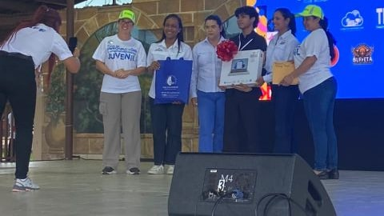
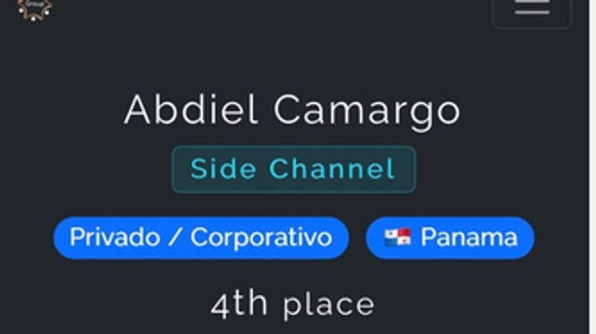
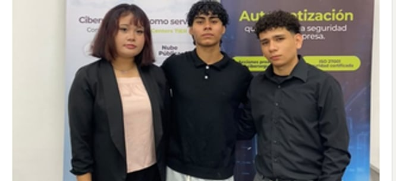
01 Sobre mí
Tres frentes que se refuerzan entre sí: proteger los sistemas, sostenerlos en la nube y usar la IA para que el trabajo técnico rinda más.
Soy estudiante de Ingeniería en Ciberseguridad con enfoque en ciberseguridad, cloud e ingeniería de IA, y experiencia práctica en soporte de TI sobre Windows y redes, además de observabilidad con Dynatrace y DQL. Manejo los fundamentos de AWS: servicios principales, IAM y el modelo de responsabilidad compartida.
En el día a día combino soporte técnico, automatización y monitoreo. He desarrollado herramientas internas para inventario de activos, seguimiento de actualizaciones y monitoreo de sistemas, y participé en una hackatón desplegando soluciones en Azure con Kubernetes y Terraform. En IA trabajo con modelos de lenguaje locales: montaje con Ollama, integración con Python y datos en SQLite.
Fuera del escritorio: 4.º lugar en el CTF Nacional de Ciberseguridad y 1.er lugar en la Feria de Innovación y Emprendimiento del MIDES con ALLEN, una herramienta educativa con IA local.
02 Habilidades
Nueve frentes en los que puedo aportar desde el primer día, del soporte al usuario hasta la seguridad en la nube.
Servicios principales de AWS y Azure, con el modelo de responsabilidad compartida como base.
Consultas SQL y automatización con Python para ordenar, procesar y analizar información.
Modelos de lenguaje locales con Python y Ollama para asistentes, análisis y automatización de tareas.
Fundamentos de seguridad, gestión de identidades con IAM y endurecimiento de sistemas.
Protección de información sensible y acceso bajo el principio de mínimo privilegio.
Análisis de logs y eventos con Dynatrace y DQL para detectar comportamientos anómalos.
Diagnóstico y resolución de incidencias de hardware, software y conectividad para usuarios.
Fundamentos de redes, configuración de equipos y soporte de conectividad.
Observabilidad de servicios, métricas y alertas para anticipar incidentes.
03 Experiencia
Soporte real, auditoría y operación: aprendizaje aplicado en entornos con usuarios y plazos.
Universidad del Istmo
Mayo 2026 — presente
AIESEC
Ago. 2026 — Ene. 2027
Institute College Panamá / CSCYT
Oct. — Dic. 2025
04 Proyectos
Laboratorios, soluciones técnicas y experimentos donde documento el proceso, las decisiones y los resultados.
05 Formación
Aprendizaje continuo, con credenciales que respaldan cada área del stack.
En curso
Universidad del Istmo · 3.er trimestre
Completado
EUDE European Business School · 20 horas · 21 oct. — 13 nov. 2026
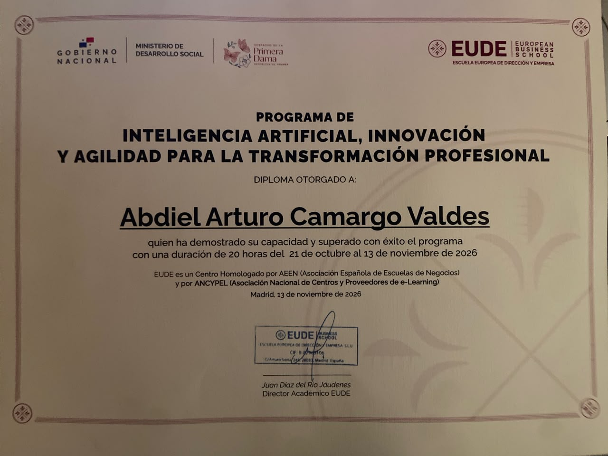
Ver diplomaEUDE European Business School
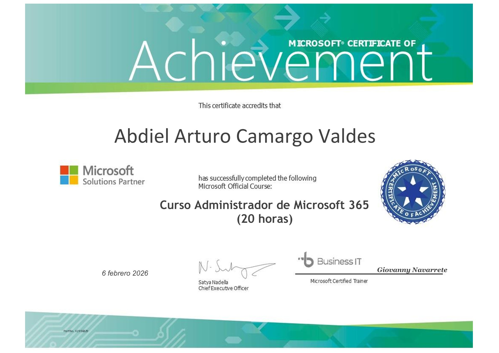
Ver constanciaMicrosoft / Business IT
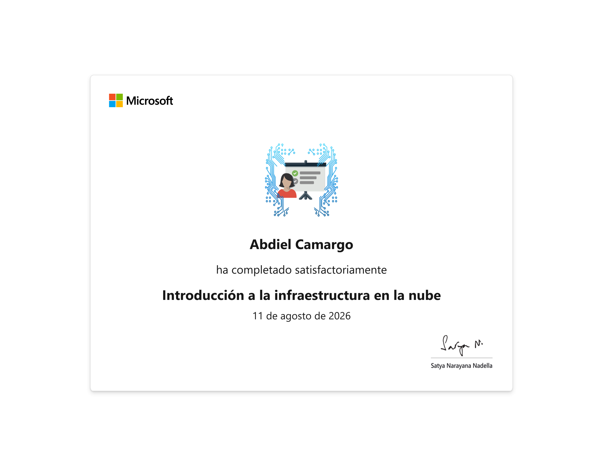
Ver constanciaMicrosoft
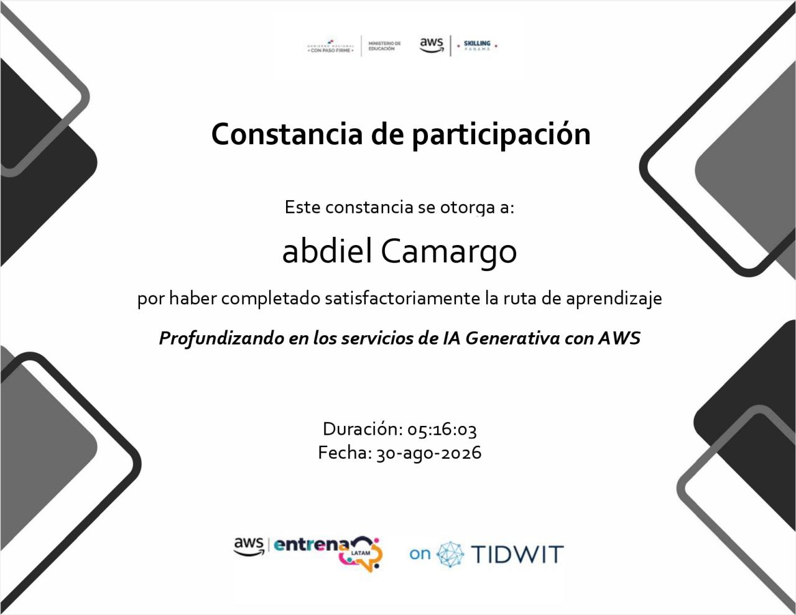
Ver constanciaAWS Entrena LATAM / TIDWIT
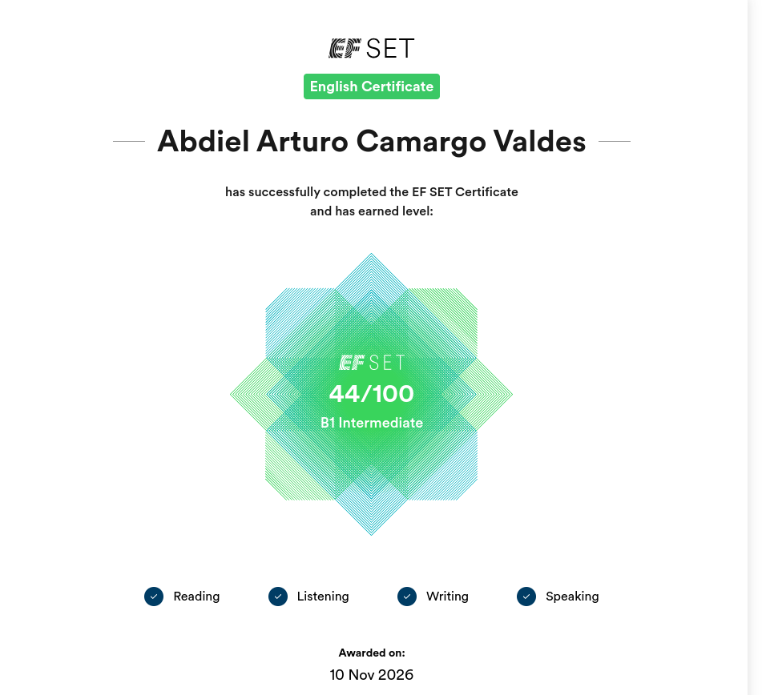
Ver certificado oficialEF SET
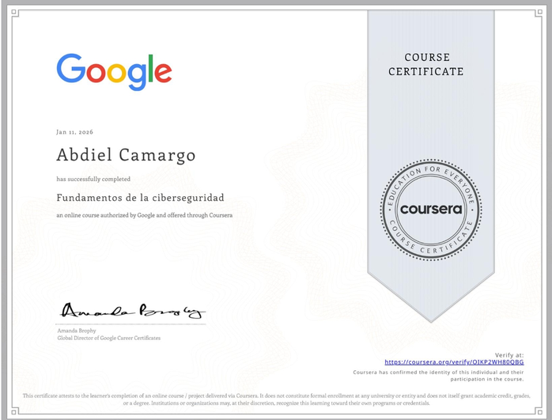
Ver certificado verificadoGoogle / Coursera
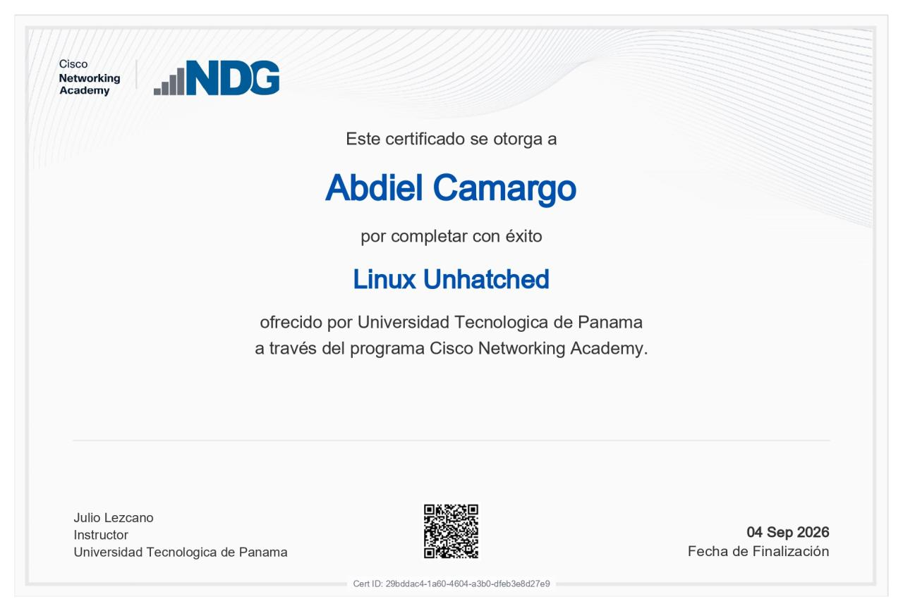
Ver certificadoCisco Networking Academy / UTP
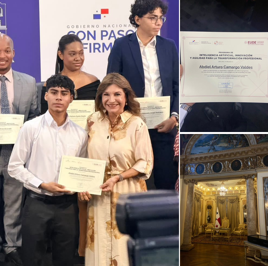
Ver momentoDespacho de la Primera Dama · MIDES · EUDE Business School
Recibí el diploma del Programa de Inteligencia Artificial, Innovación y Agilidad para la Transformación Profesional en la Presidencia de la República de Panamá. La iniciativa fue impulsada por el MIDES, el Despacho de la Primera Dama y EUDE Business School, institución española de formación empresarial.
EUDE Business School · España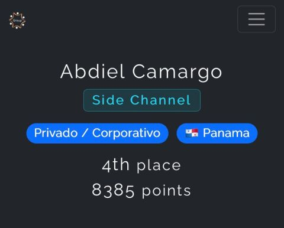
Ver resultadoMin. de Seguridad Pública / ITSE
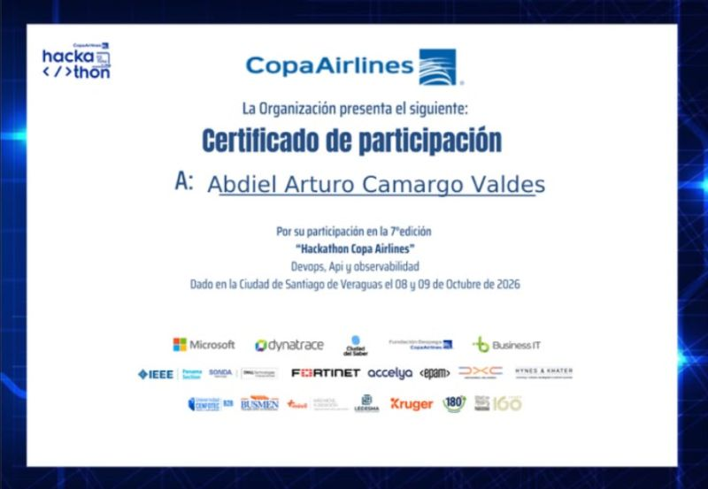
Ver certificadoCopa Airlines
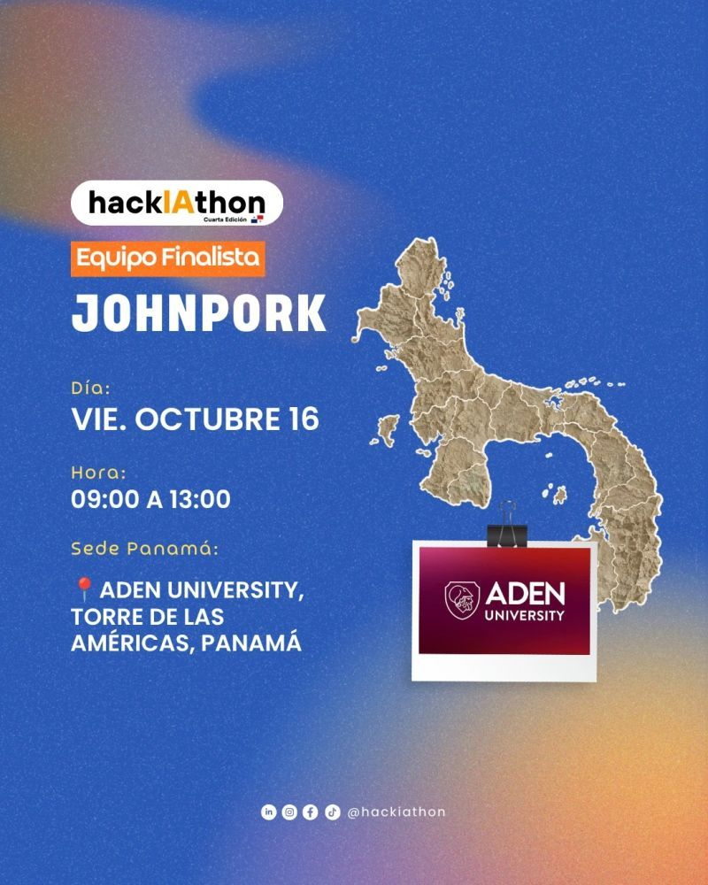
Ver reconocimientohackIAthon
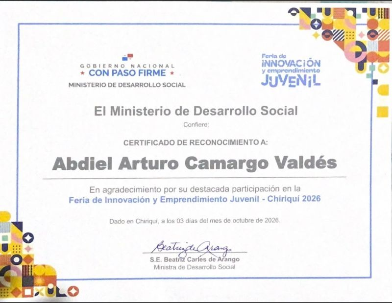
Ver reconocimientoMIDES · Chiriquí 2026
AWS Academy
06 Contacto
Estoy abierto a prácticas, posiciones junior de soporte de TI, cloud o ciberseguridad, y a colaborar en proyectos donde pueda aportar orden, monitoreo y automatización.